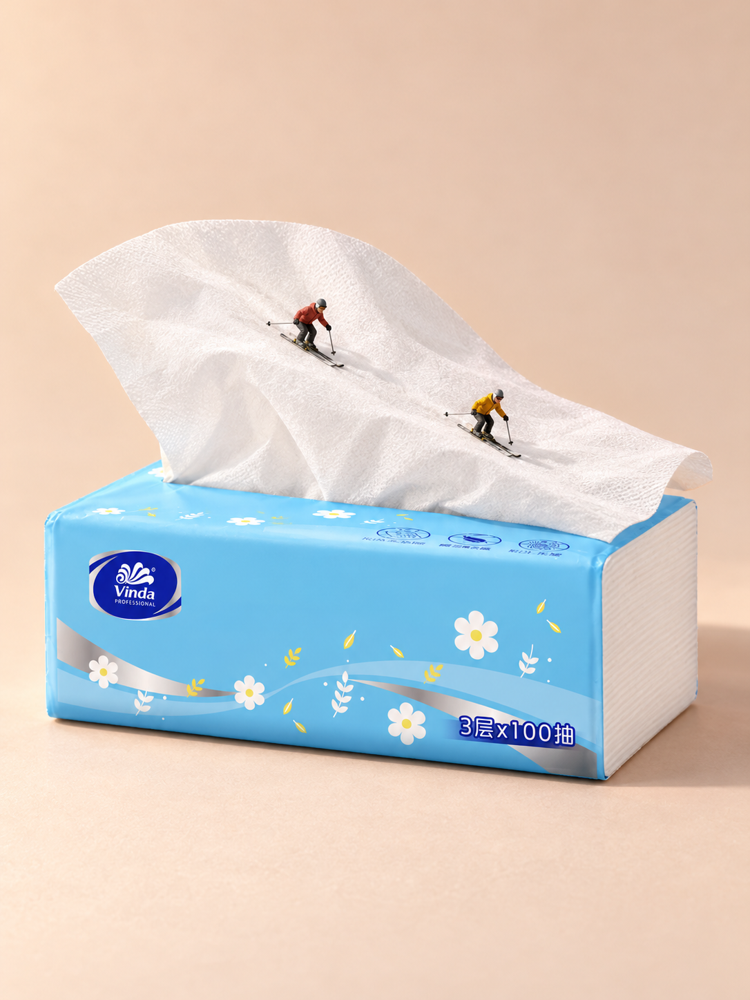

01 / 提供什么
目标与参考
助手选取了维达 VS2102 官方商品参考，并实际传给生图工具。它不是用户上传的照片，也未核实为实拍；这里提供来源链接，不转载官方商品原图。
指定商品时附上参考；探索普通物件也可以只说名称。有必须保留的细节，一并说明。
二创实战 / 01 · 材质联想

01 / 提供什么
助手选取了维达 VS2102 官方商品参考，并实际传给生图工具。它不是用户上传的照片，也未核实为实拍；这里提供来源链接，不转载官方商品原图。
指定商品时附上参考；探索普通物件也可以只说名称。有必须保留的细节，一并说明。
02 / Skill 做什么
白色、柔软、有褶皱的抽纸，被重新看成一道雪坡。两位小人的雪板贴在纸面上，下滑动作让联想成为一个正在发生的片刻。蓝色包体与薄纸边缘仍让人认得这是一包抽纸。
观察物件、比较创意、安排动作和承托、编写提示、调用工具并检查结果，都由 Skill 处理。
03 / 得到什么
上图是这次实际输出：1 次生成、0 次修正，1086 × 1448 像素。用户明确认可“抽纸的可以作为案例”。
纸片由参考中的直立扇形改成低垂宽曲面，这是有意改变柔性纸张的摆放。没有加入真雪或把包体改成山。纸纹比参考更粗，抽口部分被遮挡，小字与连接细节未全部核实；案例认可不等于严格商品保真通过。
开始使用
先按安装说明启用 Skill，并确认宿主可读图、接收参考图和生图。下面是教学示例，不是当时对话的逐字记录。附上有权使用的商品图后发送：
使用 $create-miniature-world。用这包抽纸做一张微缩场景，创意你来定。展示参考与结果，简短说明哪里变了。
/create-miniature-world 用这包抽纸做一张微缩场景，创意你来定。展示参考与结果，简短说明哪里变了。
你只需提供目标和素材，看过结果后用日常话反馈，例如“人物再小一点”“保持商品，只调暖光”。工具支持编辑时，Skill 据此修改并核对保留项；说“先看方案”时才先停下来供你选择。
没有相应图像工具时，只能得到方案或提示，不能把文字建议当作已完成的参考图编辑。
二创实战 / 02 · 物件组合
这次没有商品照片。助手提出“自然打开的笔记本形成浅谷，完整铅笔横跨书沟成为桥”，用户认可后，由 Skill 写成生图提示。用户没有填写摄影参数或长提示。
这是文字输入 → 成图，不能补一张照片冒充当时的 Before。
让完整铅笔横跨书沟，两端落在纸页上；用微缩行人的脚部接触，把“像桥”变成“有人过桥”。
1 次生成、0 次重做，1086 × 1448 像素。用户评价“铅笔的不错”，并明确将它归为二创成功。
书沟的高低、铅笔的跨度和两端纸页承托共同建立桥的读法。三人的脚落在笔杆上，物件仍可辨认。实际三人全部在铅笔上，没有实现提示中的进桥、过桥、离桥分布；书本左右边界也被裁切。认可针对这张画面，不代表每条提示都已完成。
二创实战 / 03 · 物件姿态
输入是本仓库自带的公有领域木夹照片（前景一只被手指按开的浅色木夹），通过 Codex CLI 在本机实际传给生图工具。它是普通商品照片，不是品牌 SKU。
Skill 比较了木臂吊桥、张口峡谷、双层跳台三个方向，选跳台：两片张开的木臂一高一低伸向池面，上层小人前倾待跳，下层小人坐着等。黄铜底座被画成跳台支座，是场景里的构件。提示 224 词，没有禁止清单。
1 次生成、0 次重试，1086 × 1448 像素。看图后用户只说了一句“人再小一半，其他都别动”，Skill 在同一会话做了唯一一次编辑：两人物约缩至一半，站姿、坐姿与接触点保留，木夹、弹簧、底座、泳池与机位基本不变。用户认可这个创意。
下臂尖端、木纹与弹簧有重绘，严格商品保真不判通过；无人偶实物参考，不认证型号或物理比例。
抽纸案例抓住薄、白、可弯折的纸面，让雪板贴面、人物朝下坡移动；暖浅色背景和斜上方柔光帮助看清纸边与接触。铅笔桥则明确两端落在纸页上，中段跨过书沟，取景同时看见跨度与承托。
这些是 Skill 的策划工作，不是用户作业。背景、人物数量与摄影方式服务当前关系，也不是所有物件必须照搬的模板。
上文解释是教学归纳；链接文件保留本次真实调用提示。没有对照实验，不能将一张图的成功归因于某一句提示。
抽纸从材质与形态出发，铅笔桥从物件组合出发，木夹从物件自身张开的姿态出发。它们都让日常物件的可见特点参与新场景，均不是 Tape Runner 的直接改编。没有核查所有类似先例，不宣称前所未有。
三例均为 AI 输出，未使用人偶实物参考，不认证精确模型比例或 Preiser 型号。铅笔桥没有具体商品输入，不作 SKU 保真样板；木夹是公有领域普通照片，不是品牌商品保真案例。本页作为公开实验教程；图片不自动适用代码 MIT，也不提供额外商用或再分发授权，见素材说明。